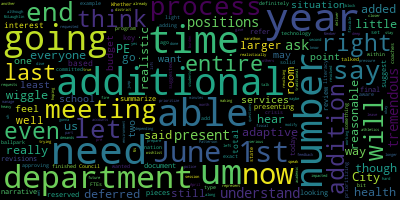

AI-generated transcript of Medford School Committee Budget Meeting April 6, 2020
English | español | português | 中国人 | kreyol ayisyen | tiếng việt | ខ្មែរ | русский | عربي | 한국인
Back to all transcripts
[Lungo-Koehn]: specific information and the general guidelines for remote participation by members of the public and or parties with the right and or requirement to attend this meeting can be found on the city of Medford website at www.medfordma.org. For this meeting, members of the public who wish to listen or watch the meeting may do so by accessing the meeting link contained herein. No in-person attendance of members of the public will be permitted, but every effort will be made to ensure that the public can adequately access the proceedings in real time via technology means. In the event that we are unable to do so, despite best efforts, we will post on the City of Medford or Medford Community Media website an audio or video recording, transcript, or other comprehensive record of proceedings as soon as possible after the meeting. The meeting can be viewed through Medford Community Media on Comcast channel 22 and Verizon channel 43 at 4 p.m. Since the meeting will be held remotely, participants can log or call in by using the following link or call-in number. Medford School Committee on Zoom, telephone information 1929-205-6099. Additionally, questions or comments can be submitted during the meeting by emailing medfordsc at medford.k12.ma.us. Those submitting must include the following information, your first and last name, your Medford street address, and your question or comment. There will be a Committee of the Whole meeting on Monday, April 6th from four to 5.30 p.m. by Zoom. The purpose of this meeting is to discuss the budgets for the following departments, art, physical education, library media, health services, and athletics. Signed by Dr. Maurice-Edouard Vincent, superintendent of the Medford Public Schools. So welcome, we have 22 participants on. It looks like the school committee, if we could take the role, Madam Secretary?
[Van der Kloot]: can you hear me? Yes. Okay. So member Jenny Graham? Here. Member Kathy Kreatz? Here. Member Melanie McLaughlin? Present. Member Mia Mustone? Right here. Member Paul Rousseau? Present. Member Paulette Van der Kloot? Present.
[Lungo-Koehn]: And Mayor Lungo-Koehn? Present. Seven present, zero absent. We have a full committee. I know we are going to start with art. I'm not sure if Ms. Patterson has any comments initially.
[Patterson]: So if you'd like, just for ease of transition, I can share my screen again and we can go through the departments. That's great. Okay, great. So Tony, you'll be up first. All right. And we are going to make sure that we have, show all my windows here. So going with the same format that we have been utilizing for previous budget meetings, we are identifying the proposed column, which you can see, can you see the screen here?
[Lungo-Koehn]: Yes.
[Patterson]: Okay, so for fiscal year 2021, this is the proposed column that the department heads have identified their need for the upcoming fiscal year. In the narrative documents that they had shared, they have identified the specifics that make up each of their line items. and they have identified any of their hopeful items if there were such an opportunity. So for the Fine Arts Department, again, I'm just utilizing a placeholder line item for the total of the departmental value of the Steps and Lane COLAs going into fiscal year 2021. for the department. It is $1,828,829 for the salaries. And as we go through each of the individual fine art supply and or instruction, contract service, textbook amounts Mr. Zignes will explain and go through each of his departmental requests, but he has a level funded budget request here for the dollar figures. So if you would like me to transition to the narrative, I'm happy to do so, or we can stay on this document and have the department heads just speak to their narrative.
[McLaughlin]: Can I ask a question, just protocol, chair? Yes, you may. Thank you. I just wanted to ask, are we doing the raise hand option on our screen? Are we raising our hand? How do you want us to ask questions on this, the first? And then the second is for the shared drive, superintendent Vincent, I'm seeing the narrative on the shared drive, but I'm not seeing the budget build for this particular item, unless I'm missing it. Is it, is it?
[Patterson]: It's a full document, it's a PDF, and it's entitled Fiscal FY21 All Budget Build?
[McLaughlin]: Yes. And so what page is this on for that? I know you're sharing the screen, but I just want to know.
[Patterson]: It's page 20 of 28.
[McLaughlin]: Thank you.
[Lungo-Koehn]: Member Kreatz? Oh, hold on, let me unmute you. Yeah.
[Kreatz]: You got it, Kathy? Yes, I couldn't find these budget sheets either. I still can't find them. I don't know where they are. I have the shared documents with all the narratives, but I don't have the budget sheets for these committee meetings, for the committee of the whole this particular meeting.
[Patterson]: They are inclusive in the shared drive. So again, if it, makes it easier. I can stay on this particular page and we can go through each of the departments that we are reviewing and you can follow along as the department heads just review their narrative.
[Unidentified]: Okay.
[Lungo-Koehn]: And member McLaughlin, you asked about raising hands. That's fine if you just want to raise your hand. The only thing is while we're sharing the screen, I cannot see everybody. So feel free to respectfully ask questions as you may. I can only see like six people on the side and be able to see the screen, so. Go ahead, Ms. Patterson, thank you.
[Patterson]: Okay, so I think we can turn it on to Tony Zignage, the department head for the fine arts, and he can review his narrative, identifying each of the categories that you see on your screen.
[Lungo-Koehn]: Do you have anything to add, miss?
[SPEAKER_00]: Yes, I'm sorry. Uh, can everyone hear me? Okay. Go ahead. Okay, not quite sure if my connection was good. Okay, so you all have the narrative. Would you like me to go through the narrative or just add to that?
[Edouard-Vincent]: I'd like to say in the interest of time and based on the total number of departments that are going to be presenting, I would like to suggest that you would summarize the key points from your narrative and then refer to this document so that we're able to hear from all of the departments. today.
[SPEAKER_00]: Thank you. Sure, absolutely. Okay, so the first thing I'd like to do is publicly acknowledge our fine art staff for their phenomenal work this year. It's been a trying year and I was really pleased that they've all stepped up and volunteered to help at every turn, including right now collaborating with each other for the distance learning. One thing that's not meant And then the narrative that I think was especially important is that I mentored five student teachers from Gordon College, Lesley University, and the School of Museum of Fine Arts at Tufts, which which we need good new teachers and the requirements for the cooperating teacher is much greater these days. So I think they should be commended for that. So for our budget concerns, Right up at the wish list is up now. The maintenance of equipment that deals mainly with piano tuning, keeping the kilns in operating condition for the art department, and some other extra things that I'll mention in a moment. Pupil transportation is mainly for the marching band to go to and from competitions and their other engagements. Office supplies basically mainly paper is a big need There will come a day. I hope when the Everything can be done on tablets and whatever but right now paper is still a big priority for us the textbook supplies is mainly it says textbooks, but it's mainly curriculum supplies mainly for the music teachers that includes method books printed materials printed music and and some online materials. The instructional supplies is mainly the consumable things that the art department uses. They go through a lot of paints and paper and supplies such as that. Hardware, we have, again, we have the kilns in particular and a lot of the instruments need upkeep and repair. And, um, as far as the, um, in addition to our normal operating requirements, we're able to accomplish some important things, extra things this past year. Uh, the baby grand piano at the McGlynn auditorium needed some major attention in addition to, um, needed to be tuned. The cover, the music stands had undergone significant damage over the years. So we're able to remedy that and put that instrument back into shape. And more importantly, I was able to replace about half of the art room stools at some of our elementary and middle school art rooms. These rooms had and still have the original stools from when the schools opened, and they tip over easily and have this formica-type seat that when it falls, it chips and has sharp edges and leaves shards. So this year we're able to replace 20 at the Brooks, 20 at the McGlynn Middle School, 20 at the Columbus, and 15 at the Roberts with the metal type stool that you see in the art rooms which are much sturdier and safer. So I'm hoping to replace the rest next year. And another major concern which I outlined in my wish list is the need for safe and functional means of displaying our student artwork. The display boards that we currently have at the schools are old and deteriorating and there's virtually no way to display 3D art. And our students create some amazing work that we really should be able to exhibit in the proper manner. So that's one of my priorities for the upcoming year. So pretty much that's it in a nutshell. So I'd be pleased to answer any questions.
[Lungo-Koehn]: Any questions? Mayor? Yes, Member Graham.
[Graham]: Just a quick question for you. For the marching band, do students pay participation fees to be part of the marching band?
[SPEAKER_00]: They have, there are fees associated. A lot of them, most of it is covered by fundraising that the kids do. So it is, yeah, it's, it's a, it's a, It takes some money to run the marching band. And unfortunately, not a lot of it is covered by the budget. So there is a lot of fundraising involved, yes.
[Graham]: And do you have a sense of the average amount of fundraising that happens year over year to support the band?
[SPEAKER_00]: Yeah, I really don't have that. I couldn't tell you that off the top of my head. A lot has to do with what's happening for that year. Unfortunately, we're hoping next year is the year that the band is supposed to go to Hawaii. And that depends a lot, a major lot on fundraising. I know Mrs. Relo has been in touch with the organizers and they're just kind of taking a wait and see attitude of what's going to happen. So next year coming up is iffy as far as everything that's going to take place. And that includes all of the competitions and regular things that they normally do.
[Graham]: And does the band parent organization, did they submit information to the district about their fundraising dollars this year? Is there some way to know what that amount of money is?
[SPEAKER_00]: I can have, make sure you get that right away. I don't know, again, everything that's normally done at the end of the year is kind of up, you know. Yeah, I get it. I'd be more than happy to make sure that tomorrow we get that information to you.
[Graham]: Yeah, whenever you have a chance, it's not urgent. I just, I'm just trying to sort of understand how all of the extracurriculars come together, which is different from, you know, between fine arts and all that good stuff. Thanks.
[Van der Kloot]: Mayor. Yes, member van de Kloot. Yes, Mr. Zigney, I just wanted to ask. I know that there's been some frustrations with working out your student enrollment in the music programs in particular. What are you looking at for next year? And because you mentioned some frustrations this year.
[SPEAKER_00]: Yes, that's so as far as, again, not as you know this budget is great if I can get what I got last year, I'm happy. My biggest concern is in the area of access to the kids. now is when the kids at home are doing their sign up. So we'll know in a few weeks if we've made any progress in that area. So the real issue for us is getting able to get our kids scheduled, basically. And this year, I think we made some improvements. And this year, in the past, I wasn't quite as pleased. But this year, I am satisfied that we have done everything that we can. And I've had the access to the kids. And we've been able to present our program as best we could. And I'm hoping that maybe that will give us some improvement in our numbers, especially. We know there are issues at the high school that affect the scheduling that are being worked on and hopefully will be resolved. So I think we've done and everybody's doing everything they can to address that problem. And I'm hoping in a few weeks when those numbers come in, then we'll have some good news. So I'm optimistic.
[Lungo-Koehn]: OK, thank you, Tony.
[SPEAKER_00]: Thank you.
[Lungo-Koehn]: Any other questions relating to the fine arts budget? Hearing and seeing none, we can move on to physical education and health.
[Patterson]: Yes, so on screen, we have the page that identifies the again, the placeholder amount for all of the salaries that include a step in lane for the upcoming fiscal year, which is $1,404,022. Each of the additional line items has been level funded again, and we can review, I will share the screenshot on the narrative as well. But if Rachel Perry would like to jump in and review her narrative items at this time.
[Perry]: Sure. Thank you. Hello, everyone. So I'll get right into it. I'm going to go right through my line items and just explain what each is used for. And then I'll talk about what I'm asking for for next year. So first we're looking at $6,000 for my fitness center supervision. And that is to have somebody open and close the fitness center after school. We have that on Monday, Wednesday, and Thursdays at the high school from 2.30 to 4.30. And that's for our staff, faculty, and for our students to be able to use the fitness center after school on three days a week. And that starts in September and that ends in June. The next line item is maintenance of equipment, which we have $20,000 in that slot. And with that money, what we do is we have a fitness company come in to maintain the equipment two times a year to make sure everything's working okay and to replace anything that needs to be replaced or upgraded. We also have a company called Wingspeed come in to make sure our low elements course at the middle schools are also maintained. Um, the rest of that money we actually put towards upgrading some equipment in the fitness center, which the fitness center is about 10 years old. So we really start need to start upgrading some of that equipment. What we've done already is put some turf. a strip of turf in the middle of the fitness center to work on functional training. We've added TRXs to the fitness center, moved some equipment around. We've gotten the flip tires, we've gotten kettlebells, new medicine balls. So we really have done some upgrades. This year I've also ordered a couple of bikes and some of the water rowers, which haven't come in yet, but those will additionally be added to the fitness center for this year. And within the next few years, we need to continually start to upgrade some of that equipment that's in there as it is old or getting old. My next line item is office supplies, $400. That's for paper, pens, pencils, things like that. Instructional supplies, we have $15,000 and that's for equipment for my physical education and health education teachers. That could be anything from balls, bats, things like that to health education where they need markers, post a board for projects and things. And that's for the elementaries, middle and high schools. My next line is $7,000 for textbooks. And that is for curriculum supplies that could be for Michigan model things that we need to reorder every year if needed at schools. things like that, CPR curriculum that may need to be ordered. And the last one would be travel conferences for $500, and that's for conferences I could send a teacher to or for myself. And so I'm looking for a level funding for that piece. For the past five years, I have been doing the budget. So I have been looking for two full-time positions. One being adaptive physical education teacher that will meet the needs of our special education students across the district. And we're looking to continue to be inclusive, but we're also looking to support our students where they need support. And that could be a push-in model where the teacher actually goes into a physical education class and works with the student. or it could also be a pull-out model and that's going to depend on what the student needs are. The other position I would be looking for is for a middle school health teacher and that's to meet the needs of the middle school students. Right now we have one health teacher at the middle school that's going between two schools. I would be looking for one to be at each school. We do have guidance Councilors that are teaching some health right now, which could be an issue for them sometimes if they're dealing with a student in crisis. You don't have to stop what they're doing to go teach a class. And I think it would probably fit us better if we have a teacher that is licensed in health and in education in those classrooms doing that. Um, I don't know if you want me to go through that wish list that that's a big wish We're looking, um doing some renovations in the girls locker. I'm looking to put in a um classroom a spinning studio and a yoga studio, um, so I was looking to put in flat screen tvs some projectors and then Um spinning bikes, which is a really large cost there um So I'm not sure if anyone has any questions.
[Patterson]: So just to be clear, I did not include two additional positions in the salary hold. So if we were to move forward with that, that would be something that we would need to add into this number, just for clarity for the group. Okay.
[McLaughlin]: have a ballpark or can you give us some range of what those two positions would be?
[Patterson]: for the full year for the amount on the mid range of a master's level would be roughly 60,000 per position. So another 120,000. Thank you.
[McLaughlin]: And then for the adapted PE teacher, I know that's something that you and Bobby have been asking about for a while, and you've had some conversation over, do you find that there are many students in the special education community with IEPs that require adapted PE?
[Perry]: So in order to really know that number, we would have to do some testing on students, but just checking in with my teachers, they do feel that it is a need in Medford.
[McLaughlin]: Okay. Thank you. And I'm assuming, is there a special license for, teachers who do adapt to PE. I think one of the concerns that had been discussed in the past, and you addressed it in your narrative, I appreciate that, was the inclusivity of it. And so that we're not creating a sub-separate gym class, we're creating an inclusive gym class where curriculum is adapted and modified for students as needed on an individual basis. Is there a special license or something for that for PE?
[Perry]: There is an APENS license, but it's not mandatory to have. teachers can actually practice adaptive phys ed with a physical education license, but it is something that I would want someone in that position to have.
[McLaughlin]: And Rachel, do you know if any of the surrounding districts that are comparable to Medford have a position like this?
[Perry]: Yes, I have done some research on it. Malden has it. Somerville is looking to do it. Revere is putting it in for next year. I know Stoneham has it. So more and more districts are adding it.
[McLaughlin]: And so right now, if a student's IEP requires some adapted physical education, how are we accommodating that? Do you know?
[Perry]: We would have to accommodate it with the teachers we have, which is getting very difficult because they are really at their limits as well. Okay, thank you. You're welcome.
[Lungo-Koehn]: Any other questions for Ms.
[Kreatz]: Perry? Member Van der Kloot? I had a question also to Mayor Longo-Curran after Ms. Nguyen. Member Van der Kloot, then Member Kreatz.
[Lungo-Koehn]: Member Van der Kloot, can you press unmute?
[Van der Kloot]: You said that the two requests for the two additional faculty were not included in that one. Is that, just remind me because I don't remember since our last budget meeting, if anybody else had made requests for additional personnel, were they not included in the baseline budget?
[Patterson]: Correct. There was a notation that they had requested it, but for the purpose of just developing our baseline amount, I did not include additional new staff that might be required.
[Van der Kloot]: In any department?
[Patterson]: Correct.
[Van der Kloot]: Okay. Thank you very much.
[Lungo-Koehn]: Member Kreatz.
[Kreatz]: Thank you. Yes, thank you, Ms. Perry, for the report. And I do recall from last year's budget that you did put in for the same two requests for the full-time adaptive PE. Well, the middle school would be new, I think, this year. But I just want to express the need for the adaptive PE teachers for both special education and vocational students. I've heard, you know, many, many times, you know, at the beginning of the fall straight through from parents and students that there is no time in their schedule to take gym or PE. I'm happy to share an update from after, you know, the students have been out that I've heard from some of my son's friends who said that they're taking their PE online. where they're going to record like, you know, an exercise that they have to send in and, you know, it's I guess it's working out really well. So I just think that it's really important that, you know, if possible, we can get both of these positions added, so that there will be equity with the middle school and you know, also equity with the vocational school and the high school and special education needs. I just think it's a, you know, really important for, you know, for everybody. Um, so I'm really hoping that maybe there'll be extra money available for this, um, item. It has been requested. Um, this is the second year in a row. So I just wanted to, you know, express my concerns. Thank you. Thank you, mayor.
[Graham]: Yes. Member Graham. Thanks, Rachel. Just a quick question. When we talked about the middle school health curriculum, we noted the need for a staff person, but we also had some notes about professional development and materials. Is that included in these numbers that we're looking at on screen or are those additional costs too?
[Perry]: Yes, that could actually come right out of that textbooks line, the $7,000. Okay. Which I had already had in mind for that. And what about the professional development that too? Yes. Okay, got it.
[Graham]: Thank you.
[Perry]: You're welcome.
[Lungo-Koehn]: Any other questions relating to the physical education and health budget? Hearing and seeing none, we can go to number three live. Thank you, Miss Perry. Library and media. Page 22 of 28.
[Patterson]: Yes, correct. So again, we have a placeholder for the salaries, which includes step and lane, no additional changes, even though they might have been requested in a narrative. These are just as the positions are currently at 1.156387 for the salaries in the media tech department. And again, Ms. Layden has requested almost a near flatlined budget with the exception of an additional 3,000 in her textbook accounts. And I can jump to the narrative if she'd like to begin reviewing her particular line items.
[UKy15P8nAPo_SPEAKER_10]: Thank you. I wanted to mention a few of the current status that happened this year and some highlights, because they really do guide the requests for next year. We did put in a little over 1,000 new Chromebooks this year, which takes us to over 2,000 Chromebooks in the district. So we really did double our Chromebook capacity this year in the schools. That includes classroom carts, library devices, universal access devices, replacing devices that were broken. We're in a much better place with Chromebooks. So we have on average about one and a half to two and a half students per Chromebook right now. And that's what we had when we ended our closure. So we do have a fair amount of devices that have gone out, but that is what we were at as we entered the closure time. We're in the process of actually replacing old iPad teacher or staff iPads with Chromebooks, so we put about 350 of those into into play. We have some staff who continue to hold on to their iPads, but we have enough to replace the ones for people who do want them. They're very old, the iPads from the first buy. A lot of our equipment is from our initial large bond buy, which was in 2012. So we've been trying to replace desktops and Chromebooks. iPads and and and get into a better more current technology position We did have the opportunity this year with it with resources that became available to start replacing desktop computers So we replaced we're starting with the teaching labs that really have a higher demand on the devices so we did about 125 of those so we did a new tech teaching lab in the McGlynn and Andrews middle schools. We did it in the Roberts and McGlynn elementary school and the Curtis Tufts lab. So we did start replacing those desktops from the old 2012 machines. So those are very old. They're about eight years old in play, and they're actually probably about nine years old in build. So we're getting up to 10 years on those devices. So we're hoping to continue those labs. We did the high school ones already except for one So we're starting with a tech teaching labs, and then we're moving to the other labs We do have a new high school maker space which was almost done and almost ready to be to be used and that's funded by both the City of Medford as well as we had a Verizon grant so those those materials are coming in that includes things like 3d printers and virtual reality headsets and 3D pens. And so there's a lot of things that we're coming into there. We're hoping to build further down in K to eight schools, which is why I mentioned that one now. We did expand our computer science offerings, both in the K to eight tech classrooms, as well as the high school. We had a new high school teacher this year for technology. So we're able to offer additional computer science classes, digital literacy, a student help desk. So we're building that program, the new website, welcoming library, as part of our library program. We did start after-school STEAM workshops at the middle schools. We have a high school relaxation station. We have a partnership with the Medford Public Library that allows students to access the public library services. We started STEAM workshops through a partnership with the public library with the middle schools. They were alternating between the two schools. We did increase the before school hours for the library at the middle schools, and both of those library paras are receiving a stipend to do that. And we started an enrollment, which became incredibly critical as we started this online learning, in the Student Data Privacy Alliance. It's a statewide initiative. it actually makes sure that all the programs that we're using with our students, those vendors have agreed to student data privacy agreements. And so we were in the process of onboarding with that, and then now with everyone working on lots of things online, that's become really critical. So we'll continue that process as the as the year goes on and we'll have an annual enrollment with them. So those are my general ones. The general items in the budget, they're pretty standard each year. The kinds of technology we're using are pretty standard. The computers and the monitors, the laptops, we're doing a lot of support for those. iPads, we're phasing out in general except for specific needs. The Raptor security systems, digital cameras, projectors, all the basic operating, day-to-day operating licenses, software, Microsoft licenses, subscription support. So those are pretty standard so that we are about the same from year to year with some changes of what we're supporting, but still the same level of support. We have One technology teacher in each of the K to 5 schools. We have one technology teacher in each of the middle schools and we have Several technology teachers at the high school some of who share their roles with tech support Media support with our media literacy class our web design class Allison also does the the website? We have and then one full-time computer teacher teacher who's doing the various courses, and so we align with the new standards. We're not so new anymore, they're 2016. The library staffing, so all our, the Medford elementary, middle school libraries are staffed and open five days a week, and that was a big push in the last few years to expand the staffing to be able to do that. The paraprofessionals are managing the K-5 libraries and the certified librarians are traveling between. So we have one halftime elementary librarian who is traveling between the elementary schools. We have one middle school librarian certified who is traveling between the two middle schools. And we have one certified librarian and two paraprofessionals who are covering the high school. So we're sharing those resources, and we have a library para who keeps those libraries open and maintains the collections in each of those libraries. So that's our current staffing at the library. The plan going forward is to replace the remaining desktop computers in the technology teaching labs that we have not yet done. So that's the Columbus, the Brooks, and one Medford High School web design tech lab. So replacing those 2012 machines with with more current machines because they're getting really too old to do what we need them to do those school in the tech labs We have we've been putting in a lot of Chromebooks, which is a great thing the but the oldest of our Chromebooks are beginning to age out in terms of support from Google. So there's an auto expiration of, of supporting those operating systems. And so each year we'll start that process of those becoming too old to update. They'll still be functional, but they're not functional in a way that we're going to allow them to be used for like MCAS testing. So those will have to start phasing out for, for certain use, even though they still may be operational. The first year that's gonna happen is in 2021, there'll be about 100 of them that will age out. In 2022, there'll be almost 600 that will age out. So we're gonna hopefully start doing that sooner rather than all at once as they begin to, the auto-update expiration will come due each of those years. We're looking to support a maker space in each of our libraries. We're looking to build technology course pathways at no cost, except perhaps for a stipend. We're looking to bring the Girls Who Code clubs to each of our schools. They'll be either after school or lunchtime kinds of clubs. And then going forward, we do need to look at replacing the 2012 machines that are left, the desktop machines that are left. And there's close to 1,200 of those. So we're looking at options to either start phasing those through, looking at lease options, looking at buy options, but they're big and they're expensive. It's a big ticket item. We're looking at cybersecurity training for all staff and single sign-on exploration, which is something that's been on my radar, but it sure would have made a whole lot easier to transition now to doing distance learning if there was a single sign-on to all the programs that students need. But we are looking at exploring that for next year. So in the budget allocations, the additional salaries, which are not in the salary line item, but we're looking to have No, sorry, the additional salaries that's listed there are it includes things like the summer work for our tech support Additional technology maintenance for after-school things that we try and do not during the school day So that that goes to the additional salaries the contracted services item. It's pretty much similar every year the helpdesk reporting system our library software our Our online coursework, Play-Doh. The Student Data Privacy Alliance is a membership each year, a variety of those kinds of things. The equipment maintenance is pretty self-explanatory. The instructional supplies, keeping anything running requires screen repairs, microphones, DVD drives, lighting, tools, mice. That's just an annual expense. The replacement equipment is really just trying to replace what gets broken until we can replace it in a larger scale kinds of things, like we've been able to do at least a little bit in the last year. So we did replace, we started, I listed those replacement items we've already done. We're increasing, the only increase of those items that's in that budget now is the $3,000 for the textbook account, and that's to cover increasing the collection's diverse titles as well as the changing social studies and civics curriculum. So we just need a little bit more money to build that collection a little bit. The book fairs still contribute a lot of money to our additions in the libraries, especially the elementary school. The staffing, again, that's not in there, but we could really use to increase our elementary librarian staffing. We're halftime among the elementary schools. For a certified librarian, it'd be good to at least have that person be one full time. We'd like to increase the paraprofessional hours in each of those libraries so that it's not just, so if it went from 26 and a half to 30 hours, that could cover a little bit of time. Andrews and McGlynn, we'd like to take out that stipend and actually increase their hours so that they could be scheduled to do before school and a little bit of after school time for study hall. Right now, both middle schools are covering the stipend for having them work before school so we can have a before school opening. But in the meantime, the library paraprofessionals are continuing to manage the collections at the library. So that's where we are in the library media technology world.
[Unidentified]: Thank you.
[UKy15P8nAPo_SPEAKER_10]: Any questions?
[Van der Kloot]: I have a question.
[Lungo-Koehn]: Member van de Kloot.
[Van der Kloot]: Given the, can you tell us, Molly, what was the number of Chromebooks given out to students so far?
[UKy15P8nAPo_SPEAKER_10]: During this closure?
[Van der Kloot]: Yeah.
[UKy15P8nAPo_SPEAKER_10]: about 650.
[Van der Kloot]: So given that that many has come out and will take a certain amount of use and abuse, is there, and also just understanding, even with that amount given out, there might really be more need. So Are we really okay with the numbers that we've got right now, or is it just very conservative?
[UKy15P8nAPo_SPEAKER_10]: So going forward for Chromebook? So I don't know the answer to that because I don't know what happens with these coming back. So we were working on getting closer to closer to having an average of at least a two student per device ratio in the district. And that was really beginning to work well. It was actually decreasing the need for some of the open lab spaces, because there was so much more Chromebook use in the classroom. So it was working in that direction, except for specialized software, which needs to be on desktop machines. So we were getting closer, and each of the schools were using some of their budgets to buy Chromebooks if they could, and the PTOs, some were still buying. So we were really getting close, and we put so many in from our free cash allotment this year. So that was a really good move. I don't know the answer to that because if we start to decline in terms of the number that comes back and then the aging of the first rounds coming through, we do still need to, I think, replace each year so that those aging out ones, which we really are going to take out of circulation for things like MCAS, because we just don't know about there being able to be used for that. It may become a problem going forward. So the answer is, we're getting close, but I don't know in the next year.
[Van der Kloot]: What does one cost?
[UKy15P8nAPo_SPEAKER_10]: About $200 a piece. OK, thank you very much.
[Lungo-Koehn]: Thank you, member van de Kloot.
[Kreatz]: I had a question, too. May I? Lungo-Koehn?
[Lungo-Koehn]: Thanks. Member Kreatz.
[Kreatz]: Yes. Thank you for the report Molly really appreciate it. I, I had a question, follow up to Paulette's question, I wanted to know, were there any students that wanted a Chromebook, and they still are, you know, we're still trying to reach out to those families or do we know that information yet I'm just wondering if anybody knows that.
[UKy15P8nAPo_SPEAKER_10]: So we've had some response since the last distribution last week. I've been contacted by some teachers who've heard of Families Who Need Them. We also have had some that have had problems with the Chromebooks that they've received. It's hard because we're not there to troubleshoot any of those, but whether it's actually a problem or it's something that we can fix easily. So there are still numbers. I'm not quite sure if they missed the notification about the two, or to be honest, do they need to have them? brought to them, we really don't know. So there are definitely still some students who have been coming, definitely fewer since the last distribution, but we did a lot more in the last one than I thought after the first one. So I'm not sure that we're done. If we're able to come into the building and do it again, I'm guessing a third round would not be a bad thing to do. And we do at this point have the devices to do that.
[Kreatz]: Okay, thank you. And I had one more question. And I just wanted, you know, I know it's detailed in the report, but I thought it was interesting. If you could describe the difference between the certified school librarian and the librarian paraprofessional.
[UKy15P8nAPo_SPEAKER_10]: So the certified librarian is trained as a librarian. And so they are able, they're actually teachers. So they are trained to do the kinds of, not just the administrative of checking out books or putting them on a shelf, but actually to classify those books and to assist teachers in selecting materials for their curriculum. And library paraprofessionals, although some actually happen to be teachers, as a matter of the job description, they're not at all required to be teachers and don't have that training. Thank you. Thank you very much.
[Graham]: Thank you. Mayor? Yes, Member Graham. Thanks, Molly. Can you tell me, the screen that we're looking at now, which one of those line items is the replacement budget?
[UKy15P8nAPo_SPEAKER_10]: So the replacement, the $175 is not the added replacement. That is replacing what's right in the dollars for the three labs that we haven't yet done. But then anything else, if you look at the wish list, The estimated cost, if we were to do a large-scale replacement of 2012 machines, it's either essentially close to $1.4 million in a one-time switchover, or it's an annual lease. And I was looking at some of the lease costs, and that would still be close to $400,000 a year. to do that, and that would be a lease to own, just because that's what they do.
[Graham]: So the $175 would equal the labs at Columbus Brooks and Medford High for $75. Right. Plus, what is the other $100?
[UKy15P8nAPo_SPEAKER_10]: Plus replacing any of the older devices that break that have to be replaced. So any desktop that needs to be replaced, projectors that need to be replaced, printers that need to be replaced, broken desktops. The Chromebooks that are now six years old that are starting to need to be replaced. So it's all the normal maintenance plus all the hardware that needs to be replaced.
[Graham]: But it doesn't include the 136 on the second line of the plans. Is that right? So if you see right, it says NPS technology refresh plan up under plans. And so that number says 136. So this, that hundred is not the same as this 136.
[Perry]: Okay.
[Graham]: Um, and then when you talk about, uh, things like, uh, maker spaces and building learning capacity, um, cybersecurity training. There's no cost associated with any of those things on your plan.
[UKy15P8nAPo_SPEAKER_10]: Some of those we don't have. They're really just a plan. So the cybersecurity, for example, we had a few quotes of doing some of that cybersecurity training, but we did not move forward with that yet. And that was between $8,000 and $10,000, but we didn't put it in there yet. There are some things that we actually can do even free. So we just didn't decide on what that plan was for that, but it is something that we know we need to do for all of our staff who are on computers. We need to have some cybersecurity training. Same thing with the single sign-on. There could be no cost if we use a program, say, like Clever, but it's still something that's a plan from the technology department side. The Girls Who Code is a free curriculum. So there doesn't necessarily need to be a cost if we can get volunteers to do it. So some of those things do not have a cost the maker space. I'm actually hoping to seek some funding for like we did Verizon for the high school.
[Graham]: Got it. And then, as I, as we scroll down your plan. There's this, there's this mention of, I guess it's in the down to the wish list about the 1,200 machines, the 2012 desktops, the 1,200 machines. Are these numbers in the budget somewhere? No. Okay. Can the machines even be used anymore?
[UKy15P8nAPo_SPEAKER_10]: Right now, the hardest use machines are the technology teaching labs, and those are the ones we're replacing first. So the other machines, and so the Chromebooks have taken some of that strain off of trying to quickly update those machines. Can they be used? They are being used. They are not updated to Windows 10 yet. The plan is to try and do that if we can. It's certainly going to stretch the ability of these machines, but for sort of going forward, we do need to look at doing that. We've done it with some. So we're hoping to do that with all. cause a fair amount of them to not be able to be used because it's a pretty heavy load on those old machines. So some of that replacement money that is in that line item for 175 will have to be used for some of those machines or some of the machines that we're taking out of the old labs that we're replacing with newer machines. So to answer that, yes. For how much longer? I don't know. They're getting really old. And so we just need to think about what we want to do for that. It's a big ticket item. So it's not in the budget, but it is something that It is not going away and only going to become a continued issue because it's a lot of it's essentially every teacher machine it's most uh every pretty much every library machine and it's every open lab machine in all of our schools. So it's a lot. So whether we do them gradually or we do them all at once, or we do it as a lease or we do it as a buy, it's a very large item, but they're getting old. And so at some point they won't be able to keep running. The fact that they power one won't make them useful. So we're sort of making them work, but I don't know how much longer.
[Graham]: Okay, and then when you talk about increased library staff, is there like an average amount of salary that a licensed librarian or credentialed librarian we would expect to pay?
[Patterson]: So they would fall under the teacher's salary schedule. And again, if you're getting a seasoned staff person coming in, you're looking at a $60,000 range. The paraprofessionals, in order to adjust any hours, that would need to be negotiated because they are part of the collective bargaining agreement for paras. So some of the requests in the intent of doing additional expanding of library hours certainly has collective bargaining implications and is not something that can just easily be provided in a budget scenario. So there's other factors.
[UKy15P8nAPo_SPEAKER_10]: The library paraprofessional staff are actually not in the union. They're not in the paraprofessionals union.
[Patterson]: OK. So you were referring to the non-unit, not the actual paraprofessionals.
[UKy15P8nAPo_SPEAKER_10]: Our paraprofessionals are not in the union.
[Patterson]: Just additionally, since you were referring to the large scale purchase, because we really can't identify a $1.2 million item within the budget, that is something that we would be looking or recommending for a capital project and or a bonding. to be done separately outside of the budget, that it's just not something that we can actually absorb in a given year, but that can be explored in another fashion.
[Graham]: And Kirsten, in your opinion, if we were to have a line item that dealt with routine maintenance so that we don't find ourselves in a position where we're having to bond and spend millions of dollars in one shot, like what would that number be from your perspective that would keep us maintained?
[Patterson]: Right, and I think this is, you know, something that Molly would also weigh in on, but you know, in the terms of the line item for the $175,000, that's what we've been trying to gradually increase If we had a starting platform of new devices in one given year, then it would be much easier to determine what a replacement value would be. You know, $225,000, would that be a 20% replacement? I can't quantify that because we have so many devices that are being reused and repurposed right now and we're not at a full startup platform. But the intent and what we have done gradually over the last three years, as you can see, has infused a little bit in this particular maintenance repair line item, if you will, replenishment. But that was the idea, to get gradually to a sustainable number that could just be funded and take care of all of those units as they came up for renewal.
[UKy15P8nAPo_SPEAKER_10]: Okay, thanks. And I think the hope is that if the devices were newer, that that replacement line could go down and we wouldn't have to have the same kind of infusion of repairs and the cost that goes with that and supplies to keep those machines moving. So it would take out some of that money if we were actually in a better shape with the technology that was coming in.
[Lungo-Koehn]: Thank you. OK, we have 30 more minutes. Anybody have any more questions?
[Ruseau]: Thank you. I guess I'm a little, so the wishlist was supposed to be things nobody thinks they're going to get. everything above the wish list I thought was going to be in the budget. So am I going to have to sit down, pick the budget, then go in and create my own budget, including the things that were asked for, not including the wish list, to know what the budget's request is? Because I thought we weren't working from some number. So I don't know why. you know, why the two FTEs for PE are not in that budget, and why is it that a bunch of this stuff that's on this media and library stuff, it's not in the wish list category. Why is it not already baked into the budget? Because I don't know how much work I'm supposed to do when I get the documents to then create what the real documents are supposed to be.
[Patterson]: No, Paul, what you're looking at is the real document in terms of the request from the department heads, with the exception of staffing. I thought it was important that you see the staffing levels as they are before you begin to add to them, regardless of a request.
[Ruseau]: That makes perfect sense. But then where and when will we sit down and actually do that add? I don't see that in the schedule of meetings.
[Patterson]: So that will be in in the totality of the budget once it's completed, and you see where we are and what the reality is to the city's ability to fund and the revenue sources coming in. At that point in time, we will have the realization of where you know, the total bottom line budget needs to be.
[Ruseau]: This is not what the city council has been clear on. They want us to send them a budget for what we need. We need a librarian at every school. The June 1st budget is not going to include that.
[Patterson]: I would say that we have never gone in that mode. of preparing an inflated budget with wish list items.
[Ruseau]: I'm not talking about the wish list items. Now I'm talking about the stuff above the wish list line.
[Patterson]: Well, in terms of each department and, you know, Superintendent can can also add add to this conversation is that There are things that are contingent upon collective bargaining agreements, contingent on the realities of the budget itself. But in terms of where we are going to be at the end of this process, I think it's going to be valuable that you see where we are without any of those additional staffing, and they are requests at this point.
[Ruseau]: I mean, I think the media lab one is a little more complicated, and I know we have to keep moving, but the two FTEs for the PE Health Department, those are not nice to have, those are not wish lists. They should be on this budget. And then at the end of the day, if the budget is too big and city council says no, then we go back to the drawing board and figure out what to cut. But as it is now, as I see how we're gonna do this, we're gonna send them a budget that is the, small percentage increase that will include nothing that the departments are asking for. And it's just going to be, I mean, ignoring the current crisis, which is how we're sort of operating at this moment in time. But, you know, just year over year, there's no reason to think that five years from now, we will ever have somebody in the health education who can help our students with disabilities. There will be nobody in there five years from now who will actually teach our middle schoolers what sex is. I mean, this is the repeated process. This is my third budget where we don't ever add any of these people in. And city council is supposed to be the folks that we send the budget we want, not the budget we think they'll accept.
[Lungo-Koehn]: If I may, just point of information, this budget is higher than I think can actually be presented as it is. This is working off a 5% increase where I think the city advised recently we should only be working off of a 3% increase from last year. So maybe if the city council is looking for what additional, on top of the 5% increase, what additional things the school committee is looking for. Maybe it should be on a side memo or.
[Ruseau]: But I just want to clarify something. We had in our meeting about how we're going to run the budgets, but there was no target. And everybody in the room went around and said, there is no target. We're building this from scratch. And now we're talking like there was a target, which I think half of us honestly believe there was always a target. We were never going to say it out loud. So there can't be a target of 5% if there's not a target.
[Graham]: I mean, we had this conversation at length and I was personally told that there is no such thing as a number that we work to. Lots of looks like, I don't know what I'm talking about. And yet here we are, we're talking about a number that we're working toward and we don't even know what that number is. No one has ever told us there's a 5% number we're working toward.
[McLaughlin]: Can we start a queue there so that we're raising hands and starting a queue?
[Lungo-Koehn]: Yes, Dr. Vincent and Member McLaughlin.
[McLaughlin]: Thank you.
[Edouard-Vincent]: So the June 1st meeting, that would be reserved for us to do our final review and revisions. The process that we're going through right now is looking at where we are with the additional pieces. So in addition to health, in addition to what's been said for technology, in addition to what we talked about for literacy and additional coaches, at the end of this process, even though we don't have a set number, Whether it ends up being 4.75% or 5% that the City Council ends up approving, we do have a number. It's not a solid number. I think there's a little bit of wiggle room, but it's within a reasonable wiggle room for this year. In light of what we're going through right now, everyone is very aware that The entire nation is in a state of crisis. We have to really be realistic. Last year, for example, we wanted to get the adaptive PE added. We weren't able to do it last year, and so I definitely was committed to prioritizing adding the additional adaptive PE program for this year because it's something that we deferred a year ago. However, all of those suggested positions, there's no way we can add an additional 50 FTEs by the time we're finished with the entire process. So we don't have an exact number, but we have some type of a ballpark. Um, even though I represent the schools, you have to understand that we're part of a larger city. And the same way we're making our requests, the fire department will, the police department will as well. And, um, we just need to, uh, I think be a little more flexible this year and understand that although we don't have a hard number we have to have a reasonable number and when we do have all of those positions by the June 1st meeting we will be able to say okay let's prioritize which ones can we realistically do and we're going to say yes to some requested positions, and for others, they're going to have to be deferred another year or longer, depending on what we can manage. So I think we need to go through this process. We have 20 minutes left. We still need to hear from health services and from athletics. About what's going on and um how they are being impacted as well And i'm hoping um that I know there may be one or two other questions that we're at least able to um, let those two departments present because we do have um It is a serious situation, but we need to let them at least present what it is they're doing, what's realistic, what their wishlist is. And then in the end on June 1st, that will be our true marathon session. And maybe when we get closer to June 1st, we may want to modify the time. and leave a larger block of time for us to be able to really talk about what needs to stay and what needs to be added and what needs to be let go until a future point in time. Member McLaughlin.
[McLaughlin]: I wanted to add sort of to Jenny, to member Graham and member Rousseau's point, I feel like we're creating or we're talking about two simultaneous budgets. We want an actual budget of what a school district, you know, would, especially as a new member, what the school district would be run at if we had many of the items that have been asked for for some time and have, you know, ask for city council. And what I'm hearing is that, And I, again, I'm new to the process. So one, I think it'd be really great to have a process memo where we're understanding, okay, this June 1st date, sort of what the expectations are, what we're, you know, the goals are for getting where we're going and that there's this, or is not this number that we sort of back this budget into and, or this initiative to create what I would call an actual, you know, so this is an actual budget, I guess, of what's actually being spent and what we think a 4% increase will get us. But then, you know, this, I don't know if it's an additional budget or what, but I think backing it up a little bit, I feel like we need a process now that's really explaining to us what this process is, number one. And number two, I think that there is an actual versus differential budget. And so I think, you know, I think that we need to have a process now that's really explaining to us what this process is, number one. And number two, I think that there is an actual versus differential budget. you have a line item that's what we're actually spending, what we'd propose or like to spend, like Christine has here, a surplus, a deficit. But the proposals, I don't think we can put in a couple of things on this line item and not on that line item, and a few here and not there. We have to be all or none and figure it out moving forward. And maybe that's part of the policy or process memo. I don't know. So just putting my two cents in there. Thank you.
[Lungo-Koehn]: If there's no other questions for library media, we can move on to health services. I think we have a hard stop time. Zoom might cut us off right at 5.30, so we can go into the regular meeting, but let's see if we can get through the health services.
[Patterson]: Okay, again, just to reiterate, the only area that is not being included is additional staff at this point. I've included the addition the current staff as as it is identifying the steps and lane changes. So for the Health Service Department, we have 1,167,804 going into fiscal year 2021. There is a slight increase in each of her line items. And then she also has a decrease for one of the categories. And we can just review based on Ms. Ray's narrative document that she has provided. And I will flip to her narrative as well so that we can go through each of her requests.
[SPEAKER_11]: Good evening, everyone. So some of the The request for the upcoming year, we did have, I am looking for an increase in the summer school nursing stipends because we are providing more summer school hours and coverage over with each increasing year. As well as in the nursing contract, the nurses do have, stipends available if they want to go in during the summer and prepare their offices and update care plans and get everything ready for the onset of school. The other increase was in medical supplies, and we have a number of medical supplies, specifically the We're called in boo bags that are used in emergency. They are all the silicone is degrading and we need to be replacing those this year. So that's an additional $3,000 in the medical supplies line. As far as wish list items, going to the narrative, you can read how the school nurse role has really increased in complexity over the years, and we have a lot, we've assumed a lot of unfunded state mandates into our role. I hope everybody can hear me. We, in order to keep students healthy, ready to learn, and able to access their curriculum, I am requesting an increase in nursing positions. My priority is that the Curtis Tufts High School, as well as the Andrews Middle School. The Curtis Tufts has a nurse assigned two days a week. In the interim, on the off days, nurses are pulled from buildings, including myself, if there is student need. Over the past three years, we have found an increasing student request to see a nurse, and we have been sending more nurses on the off days There is a need for a lot of health education individually and as groups related to substance use prevention and vaping education, as well as helping these students transition to some understanding of what is health insurance. How do you work within a healthcare environment for yourself? So there's a lot of help that the nurses provide at that building. The second request for a position at the Andrews Middle School, the Andrews Middle School is the only one in the district that's staffed by one nurse. And her role has increased over the past years in terms of the amount of student visits that she has, the amount of parent support that she provides, health education that she provides. And for equity amongst the schools in the other district, position for the Andrews Middle School. If anybody has any questions, I'd be willing to try to answer them.
[Lungo-Koehn]: Thank you, Ms. Ray. Any questions for Ms. Ray? If not, we can go directly to athletics. Oh, Member McLaughlin.
[McLaughlin]: Thank you. Thank you, Tony, for the report. You're welcome. I know that we've been doing the Universal Safety Committee for the past. two years, and one of the questions that we've had ongoing is about safety equipment, especially for evacuation for students with physical disabilities and other needs. Are there any needs in that area that you're looking at at this point, or is that something specifically you're looking at grants for?
[SPEAKER_11]: We probably use grant funding for that. I do have, you know, I have the comprehensive school health services grant, And hopefully, monies in that can be used for some technology purchases, possibly for some safety equipment. That's also a venture between myself and the special ed department. So we work collaboratively. And in the past, we have shared some of those costs. But they are very student-specific purchases to make sure that we have on what we need for the students in the buildings.
[McLaughlin]: So has there been an inventory or such of that or an understanding of the need or no at this point?
[SPEAKER_11]: Yes. So every school has a safety evacuation sled that is, it's a universal sled that can be used for any student in the building. For our students that are wheelchair dependent, we do have safety evacuation chairs. In the last year, we purchased a new model that is really, it's like the gold standard. So over time, I would like to replace the others that we have with the better model. It provides much easier use, Um, I think the restraint system that it has is make students more comfortable as well.
[Unidentified]: Okay. Thank you.
[SPEAKER_11]: You're welcome.
[Unidentified]: Thank you.
[Graham]: Um, next we have athletics. Oh, can, can I ask a question real quick? Yep.
[Lungo-Koehn]: Member Graham.
[Graham]: Um, for the two nursing positions that you're looking for, Tony, what is the sort of, uh, starting point for salary for a position like that?
[SPEAKER_11]: The same as with the teachers. Okay. Okay, I can't take in a nurse without any experience, you know, compared to a new teacher can come in college, a new nurse into the schools cannot, they need to have a body of experience and maturity that lends them to work in an autonomous situation. You know, we don't have doctors here. And so they have to have that sense of professionalism and experience to allow them to work optimally.
[Lungo-Koehn]: Perfect.
[McLaughlin]: Thank you.
[Lungo-Koehn]: Thank you.
[SPEAKER_11]: Thank you.
[Lungo-Koehn]: And on to athletics.
[SPEAKER_11]: Okay.
[Patterson]: Hello, everybody. Hi, Bobby. I'm just going to briefly review and recap for the athletic salaries. There's only one that is funded from the budget itself, and that is the athletic trainer. The other main salaries, which include Mr. Maloney's and his secretary, come from the community schools. Again, so that's another piece that we look at the gap fill at the end of the year. So for the athletic department, the salary is just for the new athletic trainer. This will be her second year in fiscal 2021, which is why you see a reduction. and we have a few variations that we were able to reduce some line items and I will let Mr. Maloney jump in and I can share the narrative as we go along.
[UyRSZHmpAdI_SPEAKER_10]: We're pretty good. We should be good. I think if we do have the spring season, we will have no problems. Last year, the school committee was kind enough to implement middle school sports, it's went off very well. It was a projection of 75,000, which that's not needed. I think we'll be fine with these numbers next year. And thank you for all your support and getting me in before 530.
[Lungo-Koehn]: Any questions? I can only see member Graham on the screen. So okay. Member McLaughlin, member Graham.
[McLaughlin]: Thank you. Thank you, Bobby.
[UyRSZHmpAdI_SPEAKER_10]: Thank you.
[McLaughlin]: I'm interested in integrated or inclusive sports. And I know that a number of our cities surrounding us have that option. Sorry, my screen just changed with the change in the sharing. So can you guys still hear me? Yes. So I know a number of the surrounding communities have that option. And I'm wondering if that's been a consideration for, I know that you guys have worked hard with training in a number of areas, but I'm wondering if it's a consideration for any of the sports that we're doing and especially like the middle school sports, making sure that students with disabilities and some of whom have extensive needs that we're finding ways to integrate them into our sports community.
[UyRSZHmpAdI_SPEAKER_10]: Yes, Rachel and I have had extensive conversations. Thanks for the support on the adaptive PE position. We're hoping once we get that position online that the three of us will sit down and make this happen.
[McLaughlin]: Okay, and so for the after school, any of the other athletics for the students to be able to participate, like the middle school program, those other things, are we having to turn away individuals with disabilities at all that want to participate as far as you know, or are there any?
[UyRSZHmpAdI_SPEAKER_10]: No, not to my knowledge. Both principals have been very well, have done a great job about the inclusivity and everything. Nick Tucci and Mike Diles have not said a word to us, neither have the coaches.
[McLaughlin]: Okay, thank you.
[Lungo-Koehn]: Any of them? Member Graham.
[Graham]: In our first budget meeting where we talked about the budget process and the notion that we weren't building to a number, we also had a motion on the table to schedule budget hearings for community schools specifically, as well as the before and after school and food service. So those big revolving accounts. And to my knowledge, those haven't been scheduled yet. Do we have a plan to get those on the calendar sooner rather than later? And then my second scheduling question for Bobby is, we did have a motion to talk about the policies and procedures around athletics eligibility, and that was supposed to be end of March. But obviously, we're all just a little delayed here. So I was just curious when we could expect that information as we go forward.
[UyRSZHmpAdI_SPEAKER_10]: I don't know if Peter Cushing's on, but I believe the report's done. Paul DeLava, myself, Rachel Perry, Mo Lavin from guidance sat down and we put a plan in place. So I believe the MIA schedule should be done. As far as community schools, I do not know.
[Patterson]: So just a clarification for you, Jenny, those programs are not budget built. They are directed strictly on receipts, reimbursements, tuitions, and so they operate within their own isolated program on annual and expenditures out. So what we were doing is just reviewing, which I believe I've shared thus far in the term of a recap of those program areas, but they are not budget developed. We can give an estimate, but again, right now with the volatility of everything that's happening, that estimate is not going to look as the normal trend has been for each of those program areas. So to the extent of a budget hearing or billed for those outside programs, I don't think that that was not the intent that I was looking for. looking at.
[Graham]: Well, I think it may have been my motion and that was definitely my intent. So, I understand that they are not budget built in this same way. However, we have no We have no visibility or transparency into how those revolving accounts work, like community schools. I know there's a million things that come in and out of community schools, and we don't ever talk about those things. So my intention when we were having that discussion, and I don't know how other people feel about this, but my intention was that we would have a financial review of those revolving accounts that was in more detail than a single line item on a single piece of paper. So I'd like to, if that was unclear the first time, I'm happy to make a motion right now to conduct a financial review of our evolving account programs in some level of detail so that we can all understand the ins and outs of those programs.
[McLaughlin]: Second.
[Edouard-Vincent]: I just want to jump in and I'm gonna ask for Ms. Patterson to give some feedback. Right now, I said it last time when we met, we are under tremendous pressure not being in a traditional working environment along with everyone. And the demands of being able to prepare the entire budget for the district now to do an additional deep dive of additional revolving accounts. I feel that that's a tremendous ask and a heavy lift where we're already in the month of April and our own fiscal situation isn't even resolved. We haven't had all the departments present for this academic school year. We're still trying to do pre-budget meetings and at the same time meeting to deliver services to our students. So I understand that there was a second, but I just feel I need to speak and say that this is a tremendous additional ask and burden to be able to get this done between now and June 1st.
[Patterson]: Thank you, Superintendent. To that extent, not only are we developing these reports, doing the steps and lane increases, looking at the contractual obligations for next fiscal year, we are also providing and maintaining the level of service within the business center, which incorporates conducting payroll, conducting accounts payable to ensure bills are paid out. We are also having to get started on our open enrollment for all of our benefits that will be started this week. So there's a significant amount of effort and work that is going on right now. And if you can see on the screen currently, just the departments that we've reviewed right now, we are almost at $30 million in our fiscal 21. budget request. So as we continue with this process, we're going to have a significant amount of work to do to identify where we are going to come in and be able to present a budget to city council and or in a time frame that will allow us to get that approved before the end of June. So I'm happy to provide a recap again, but as I've shared, there are some pieces of the information that are not complete because they are not in the system. So I can't provide you something that is not yet there. I can't provide you the amounts that have not been posted. I can't. I can provide guesstimates. I can provide the activity year to date and where it stands. But these programs are in and of themselves supposed to be individual operating programs. And if there is not the revenue to support them, then their program is either supplemented and or reduced in this level of service. So in the capacity of being able to have additional meetings in this format, I think is just unattainable right now. With all due respect.
[Ruseau]: Mayor. Member Ruseau. Thank you. I completely understand that there's only so many hours in the day and there's only so many people in the office. Well, there's nobody in the office, but the decisions, for instance, whether or not these programs are offering services or charging fees at a rate that the school committee thinks is appropriate is a school committee decision, but we never get to make the decision. Should we be doing the same cost for families who have a half a million dollars in income versus families that are living on $10,000 a year in income. We don't make that decision. So, you know, there's a lot of decisions the school committee should be making that are very much related to these programs. And then also, you know, the program does, if the particular account does not have enough funds, we transfer our money from our general budget into it or from another one of those accounts. So we're making a decision There's just so much that we have no idea what's going on, but then at the end of the day, we're expected to just hand some money over or, you know, I have had emails, numerous emails over the last couple of years, like, why do I pay so little for before or after school? From some families that are like living large by Medford standards, who are like, I can't believe I pay so little. Well, as a school committee member, I should be deciding on whether, we should be deciding whether or not to adjust the rates for those programs so that we can support families that are living below the poverty level. We don't do any of that, but also, you know, we had that big issue with the foreign afterschool or Israeli afterschool recently. And that was, a lot of that has to do with the fact that, you know, there's this view that afterschool is collecting all this money And then we're just using it like it's a piggy bank. And the lack of transparency on the fact that those employees have benefits, they have all the other stuff that isn't coming out of that account. We need to open the books on this stuff. We need to be able to say, after school brings in this amount of money and after we have paid all of the employees and the city has paid for their benefits, for their retirement. And I realize some of that will be kind of squishy, but right now we don't say anything about it. So is it $600,000 in profit we're pulling out of afterschool people and then complaining because we don't want to pay them more? I mean, that's what it looks like to the public. And that's not an unreasonable view, because that's the view I feel like I have often as a school committee member. And I get that we don't have enough time to do yet more reports this budget season, but I just feel like This lack of transparency here is a problem.
[Patterson]: Well, in all due respect, we've provided that information in each subsequent budget year. So we've identified what the anticipated amount we would need from each of those programs in order to fill the gap. As I reported on the last report of the revolving accounts, we didn't utilize the full amount I was able to reserve. And thank goodness we did going into this unknown crisis. So in the extent of identifying that it's not transparent, I have to disagree with that. And also identify that there will be more discussion in our executive session that you will have the additional information regarding some of those revolving accounts.
[Graham]: Okay, I know we're at 530. I still have a motion on the table. Okay, can you just repeat your motion, it was to conduct a financial review of revolving our revolving our significant revolving accounts so food service before and after schools and community schools. I'm, I'm super willing, I'm super willing to talk about a reasonable timeline but I don't know how we ever have a reasonable timeline because every time we talk about the budget, we run out of time. So something has to change in this process going forward, for sure, so that we can have time to talk about all of this stuff. But we can't continue to say we don't have time when this committee is expected to sign off on a budget and send it to the city council. whether it's this budget or it's revolving accounts, it's all related. None of it can be isolated, not the way we currently do business.
[Lungo-Koehn]: I agree. We could move this meeting to the 5.30 meeting if we want to continue the discussion or we can take the vote on the motion and then go to the 5.30, either way.
[Van der Kloot]: I just wanted to weigh in.
[Lungo-Koehn]: Yes, member van der Kloot.
[Van der Kloot]: Can we pick one of the areas that we want to see? No. No. In terms of time by, or, you know, you said June 1st. Can we say June, hold it out a little bit longer? You know. 15th? We're running out of daylight. And by the way, I'm certainly willing to, you know, I know, I know that we wanted to put the budget meetings before the other meetings, and I know that there's a lot of planning time, but we could consider doing a different night as well, or time. I'm just trying to work out, I hear the administration saying, oh my God, we've got so much to do, and I hear your need of saying, We need to see more in depth. I think we have discussed, and I think we will discuss some of it in depth, but I'm trying to look for a place that might be a little more amenable to administration. Can we push it out, Christine?
[Patterson]: Just for a I'm doing the best I can I'm one person here. I'm one person doing the finances I'm doing everything I possibly can to get this budget. The operating budget is that the main? Drive here that we are trying to maintain I still have my own obligations at home as other folks do but I am I am one person and one person alone working on this process so in that regard I can't promise that an unrealistic timeline. I'm working 12 hours a day on this stuff right now. And And quite frankly, it's it's impeding my vision right now looking at these screens and we'll be on these white screens for another five hours. So I am doing my very best for this for this process. And it has been transparent and I have provided the documents and the numbers as they have been provided. I will load up the the numbers for all these additional I'm willing to amend my motion to give us until October 15th to have these meetings.
[Lungo-Koehn]: to start the budget meetings in October next year?
[Graham]: I'm talking specifically about these revolving account meetings. They can wait to occur until next year, but they need to occur before October 15th.
[Van der Kloot]: I'm not sure that's necessarily real right now. However, Yeah. I don't know what is public and not.
[SPEAKER_01]: I'll second that for the October 15th. I think it was already seconded, though.
[McLaughlin]: Mayor, ma'am?
[Lungo-Koehn]: Member McLaughlin?
[McLaughlin]: Yeah, I'm just wondering also, and I've been in Paulette and Paul and Mia and Kathy have been on the committee, obviously, for more than one term. I've been in several meetings in the past where this has been, this information has been asked for. And so I'm just confused because it's not like, okay, now I know we have a lot of, you know, we have a pandemic going on, we have lots of things going on, but this has been asked for in the past and it's always been sort of put off and I'm not really understanding why. And maybe that's just, I'm out of the loop or maybe somebody can enlighten me here, but I don't really understand why this has been asked for for years and has not been answered.
[Patterson]: Well, that's not accurate. We have provided the revolving account reviews and in all fairness and honesty for this body, that has been done on an annual basis. Usually we are working on that for March. However, things have been in a backlog situation. And quite frankly, a lot of this has to do with things that occur in the Treasury Office at City Hall that are out of my hands. I cannot report something that is not yet in the system. So in the sense of saying that this information has not been provided, I'm sorry, but that is not correct. We have been providing an annual review of the revolving accounts for each of them subsequently, and I can provide those reports for you as they have been done the last three years.
[Lungo-Koehn]: Member van de Kloot. Hold on one second. Can you unmute yourself? Yes. Thank you.
[Van der Kloot]: I would concur that I've certainly heard the information before that it's not that this information was withheld. I think it's just the update on the information. And in previous years, we also waited because the accounts were not finished off yet to a later date in the year. So I certainly would endorse what Ms. Patterson is saying. So, you know, we can certainly shoot for October 15th. Um, I think, um, if so we can take the vote and move on now, um, that that would be our objective would be, would be good. Uh, and we'll, um, you know, all things considered.
[Lungo-Koehn]: Sounds good. Um, so a motion to review all revolving account accounts and have meetings to do that on or before. before October 15th, motion by member Graham, seconded by member McLaughlin. All those in favor. Roll call vote, please. Roll call vote has been requested. Member Van der Kloot. Member Van der Kloot, you have to unmute yourself. I'm sorry, it's not working in my end. Roll call. You gotta unmute yourself. Hold on. go ahead, you do it, Member Van der Kloot. There we go.
[Van der Kloot]: Thank you. All right, Member Graham? Yes. Member Kreatz? Cathy? She might have got it. Oh, okay. Member McLaughlin?
[Unidentified]: Yes.
[Van der Kloot]: Member Mustone? Yes. What, she left? Okay, absent. She's here, she said yes. Yes, okay. Member Van der Kloot? Yes. And Member Mayor Lungo-Koehn?
[Lungo-Koehn]: Yes. 7 the affirmative, 0 the negative. Paper passes.
[Ruseau]: That's from Paul, too. You didn't ask me, Paulette. Oh, sorry. That's OK. Remember, so I marked you off, Paul. OK.
[Lungo-Koehn]: Thank you. OK. If there's no other questions, I believe this kicks us off at 545 Mr. Cushing okay 545 so we can continue this. Let's take a five minute break and reconvene at our next meeting. On the other, you have to get logged off and then get on to the next zoom call. Thank you. Motion to adjourn. Second. I suppose motion meeting is adjourned.
Lungo-Koehn
total time: 6.76 minutes
total words: 941

|
Van der Kloot
total time: 4.13 minutes
total words: 560

|
McLaughlin
total time: 6.05 minutes
total words: 1104
|
Kreatz
total time: 2.68 minutes
total words: 450
|
Edouard-Vincent
total time: 5.08 minutes
total words: 750

|
Graham
total time: 6.71 minutes
total words: 1038

|
Ruseau
total time: 6.32 minutes
total words: 1107
|
|
|
|
|
|
|
|
|
|
|
|
Back to all transcripts
{kind=link}
{kind=link}
{kind=link}
{kind=link}